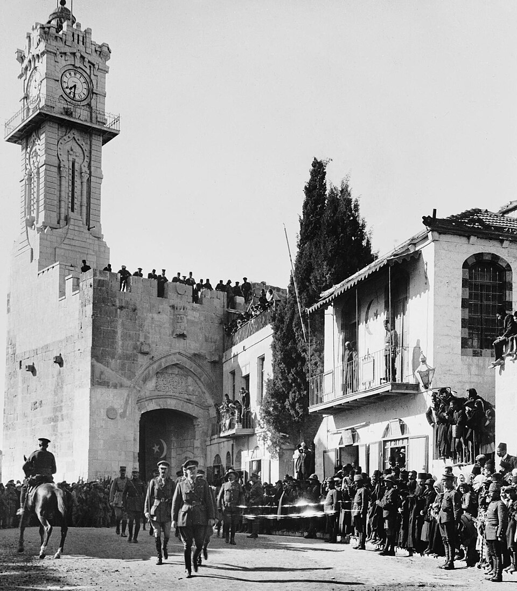
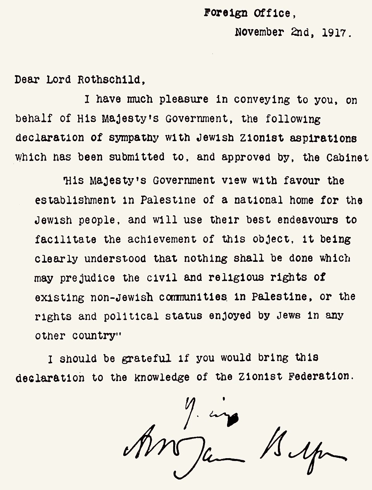
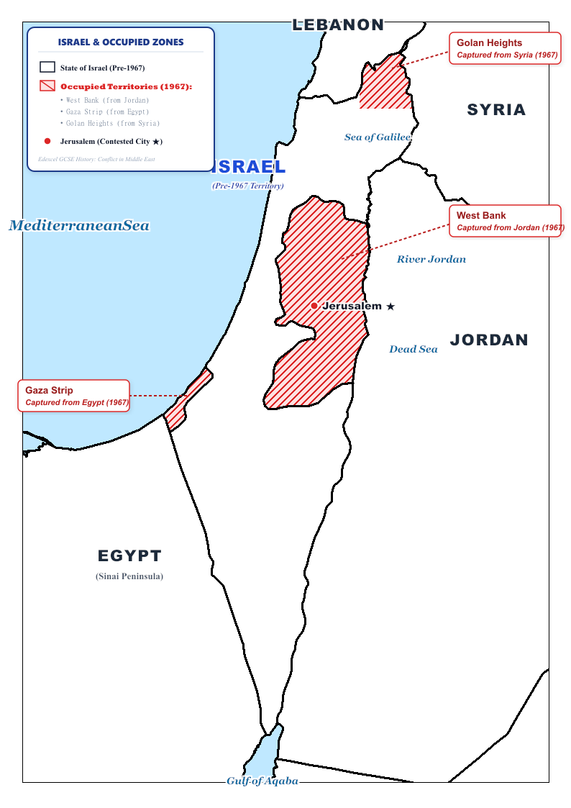
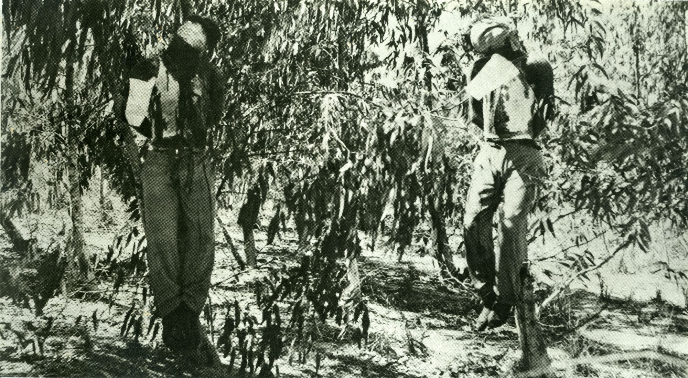
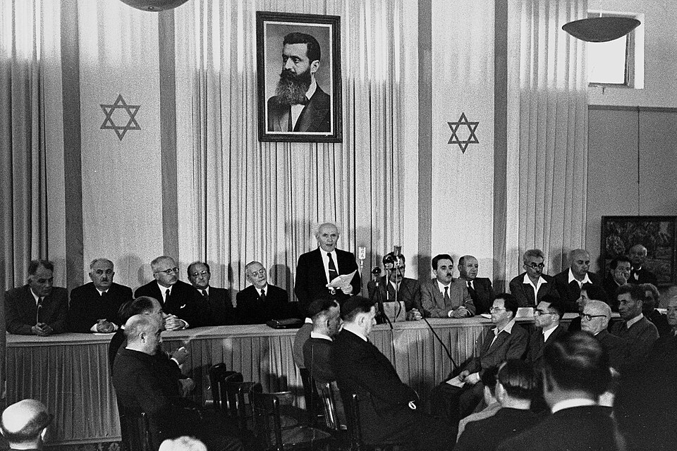
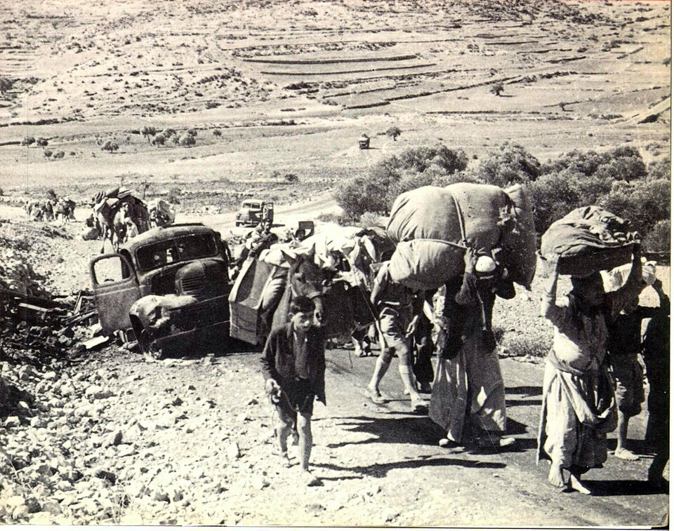
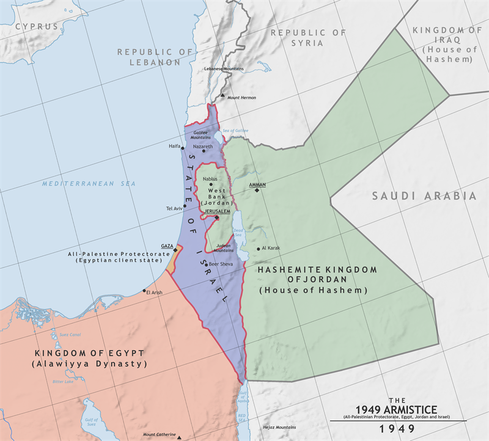
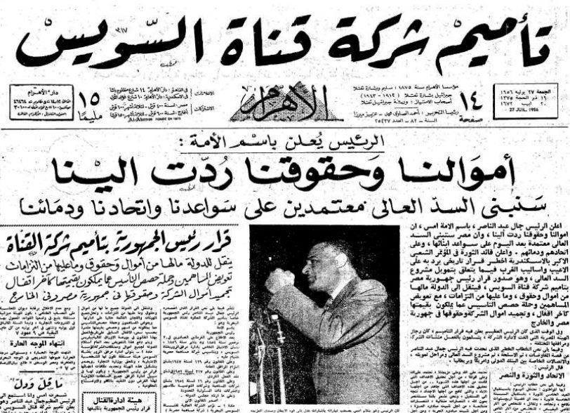
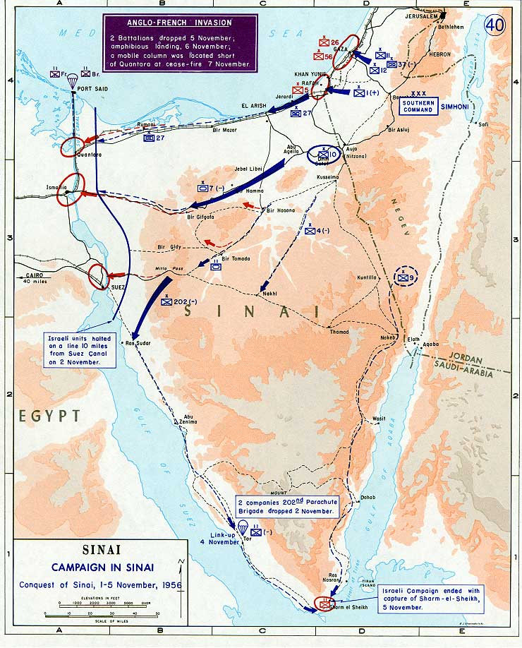
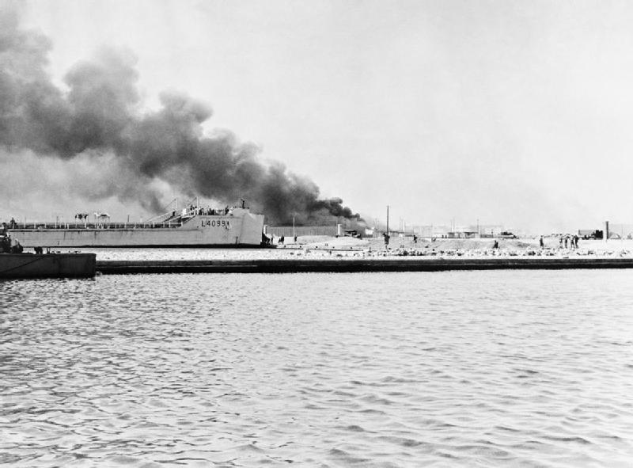

Edexcel GCSE (9–1) History • Option 26/27
Conflict in the Middle East
1945–1995
Key Topic 1: The birth of the state of Israel, 1945–63

David Ben-Gurion reads the Declaration of Independence beneath the portrait of Theodor Herzl (Tel Aviv, 14 May 1948).
Official Course Textbook
Enquiry: “Why has peace proved so elusive in the Middle East?”
Contents
|
Lesson 1: KT 1.0: Broken Promises & Imperial Borders: Why Was Conflict in the Middle East Inevitable?
|
Page 2
|
|
Lesson 2: KT 1.1: The End of the British Mandate and the Creation of Israel, 1945–1949
|
Page 5
|
|
Lesson 3: KT 1.2: The Aftermath of the 1948–49 War & The Palestinian Refugee Crisis
|
Page 12
|
|
Lesson 4: KT 1.3: Increased Tension, Nasser, and the Suez Crisis, 1955–1963
|
Page 17
|
L1: KT 1.0: Broken Promises & Imperial Borders: Why Was Conflict in the Middle East Inevitable?[[SRC_MARKER:L0_Start]]
Learning Objectives
Analyse how the Sykes-Picot Agreement (1916) and League of Nations mandates drew artificial straight lines across former Ottoman territories.
Evaluate the contradictory British wartime pledges: the McMahon-Hussein Correspondence (1915) versus the Balfour Declaration (1917).
Identify the 4 strategic flashpoints of the Arab-Israeli conflict: Maritime Chokepoints, Elevated High Ground, Freshwater Basins, and Jerusalem.
The Middle East is the ultimate geopolitical crossroads of the earth—the physical land bridge connecting Europe, Asia, and Africa, the guardian of vital maritime chokepoints, and the birthplace of three world religions. To understand the bloody wars between Arabs and Israelis from 1945 to 1995, one must first understand its geography: how European diplomats drew straight ruler lines across deserts, why fresh water from the River Jordan is a matter of national survival, and why controlling the high ground of the Golan Heights or the narrow waters of the Straits of Tiran dictated the difference between victory and annihilation.
Source A: The Sykes-Picot Agreement Partition Map (8 May 1916)
Primary map of the secret Sykes-Picot Agreement signed on 8 May 1916 by Sir Mark Sykes and François Georges-Picot, dividing the Middle East into British and French spheres of influence.
Q1. Study Source A. Using the partition map, explain why the secret Anglo-French division of the Middle East in the Sykes-Picot Agreement laid the groundwork for decades of border conflicts and Arab betrayal.
Geopolitical & Spatial Recall (Prior Knowledge)
1. Which three continents intersect at the Middle East, making it a critical strategic crossroads throughout world history?
2. What vital maritime waterway, completed in 1869 across Egypt, connects the Mediterranean Sea directly to the Red Sea?
3. What narrow body of water at the southern tip of the Sinai Peninsula controls maritime access to the Gulf of Aqaba and Israel’s southern port of Eilat?
4. Which elevated volcanic plateau in south-western Syria directly overlooks the Sea of Galilee and northern Israeli civilian settlements?
5. Which freshwater river forms the natural eastern boundary of the West Bank, flowing south from the Sea of Galilee into the Dead Sea?
6. Which ancient city is considered a sacred holy sanctuary by Jews, Christians, and Muslims, and claimed as a capital by both Israelis and Palestinians?
7. Which vast triangular desert peninsula connecting Africa to Asia served as a major military buffer zone between Egypt and Israel?
8. What secret agreement in May 1916 saw British and French diplomats use a ruler to carve the collapsing Ottoman Empire into European spheres of influence?
9. What official British letter in November 1917 promised British support for the establishment of a "national home for the Jewish people" in Palestine?
10. Why is military control of "high ground" like the Golan Heights considered an indispensable defense asset in modern warfare?
Vocabulary Check
Write a short paragraph using at least THREE of the vocabulary words below correctly.
Sykes-Picot Agreement | Mandate | Balfour Declaration | Zionism | Arab Nationalism | Chokepoint | Contested Territory
For over four centuries leading up to the First World War, the Middle East was ruled as part of the vast Turkish
Ottoman Empire. The region was not divided into modern nation-states like Lebanon, Syria, Jordan, or Iraq; instead, it was administered as imperial provinces under the Ottoman Sultan in Constantinople.
When the Ottoman Empire joined World War One on the side of Germany in October 1914, Britain and France seized the opportunity to dismember the Turkish empire and expand their imperial dominance. In May 1916, British diplomat Sir Mark Sykes and French diplomat François Georges-Picot drew up the secret
Sykes-Picot Agreement. Using a ruler across a map, they partitioned the region:
- French Sphere: Syria and Lebanon (coastal blue zone and Area A).
- British Sphere: Mesopotamia (modern Iraq) and Transjordan (Area B and red zone), securing oil routes to the Persian Gulf.
- Brown Zone (Palestine): Designated for international administration due to the religious sensitivity of Christian, Muslim, and Jewish holy sites in Jerusalem.
Following Allied victory in 1918, the newly formed
League of Nations formalised this partition through the
Mandates System at the San Remo Conference (1920). These straight-line borders completely ignored traditional tribal boundaries, religious sects (Sunni, Shia, Christian, Druze, Jewish), and natural geography. This artificial map sowed the seeds of chronic regional instability that persists to this day.
[[SRC_MARKER:L0_Task_0_0]]Q2. Explain why the borders drawn by the Sykes-Picot Agreement (1916) created long-term instability in the Middle East.

[[SRC_MARKER:L0_Source_3]]
Source B: The Original Balfour Declaration Letter (2 November 1917)

The original letter from Foreign Secretary Arthur Balfour to Lord Rothschild expressing British support for a national home for the Jewish people in Palestine.
Q3. Study Source B. How did Arthur Balfour's pledge to establish a "national home for the Jewish people" create a fundamental and unresolvable contradiction with the rights of the existing Arab majority?
During the desperate fighting of World War One, the British government made contradictory promises to both Arab and Jewish leaders in order to secure essential wartime support, creating a legacy of bitter betrayal.
1. The McMahon-Hussein Correspondence (1915–1916):
Sir Henry McMahon, British High Commissioner in Cairo, exchanged ten official letters with
Sharif Hussein of Mecca, guardian of Islam’s holiest sites. In exchange for the Arabs launching an armed rebellion (the Great Arab Revolt, assisted by T.E. Lawrence) against Ottoman forces, Britain pledged to recognize an independent, sovereign Arab kingdom across the Middle East. Arab leaders believed this pledge encompassed Palestine.
2. The Balfour Declaration (2 November 1917):
Just two years later, British Foreign Secretary Arthur Balfour sent an official letter to Lord Walter Rothschild, a prominent leader of the British Jewish community. The declaration stated:
'His Majesty's Government view with favour the establishment in Palestine of a national home for the Jewish people...'. While it added that nothing should prejudice the civil and religious rights of existing non-Jewish communities, it made no mention of their political or national rights, despite Arabs making up over 90% of Palestine’s population in 1917.
The Clash of Nationalisms:
- Zionism: Founded by Theodor Herzl in 1897 in response to violent European antisemitic pogroms. Zionists argued that Jewish people would never be safe from persecution without their own sovereign state in their ancestral biblical homeland (Eretz Israel / Palestine).
- Arab Nationalism: Arab leaders argued that having lived continuously in Palestine for centuries, the Arab majority possessed an indisputable natural right to national self-determination and independent statehood.
Britain had promised the exact same sliver of land to two different peoples with mutually irreconcilable aspirations.
The Interwar Crucible: Demographic Pressures, The 1936–39 Arab Revolt & The 1939 White Paper
During the interwar British Mandate, the demographic and political balance shifted dramatically:
- The Fifth Aliyah (1930s): Following Adolf Hitler’s accession to power in 1933 and the enactment of the anti-Semitic Nuremberg Laws in 1935, over 200,000 Jewish refugees fled Nazi Germany and Central Europe to Palestine. The Jewish proportion of Palestine’s population rose rapidly from roughly 10% in 1919 to over 30% by 1939, stoking intense Palestinian Arab fears of total economic and demographic displacement.
- The 1936–1939 Arab Revolt: In April 1936, Palestinian leaders formed the Arab Higher Committee and launched a six-month General Strike. This escalated into an armed, countryside rebellion targeting British military personnel and Jewish settlements. British authorities suppressed the revolt with ruthless martial law, using collective punishments, village cordons, house demolitions, and the exile or hanging of Arab nationalist leaders. While defeated, the revolt crippled the Palestinian political and military leadership on the eve of World War Two.
- The 1937 Peel Commission (First Partition Plan): Led by Lord Peel, Britain’s royal commission concluded that the Mandate was unworkable because the "aspirations of 400,000 Jews and 1,000,000 Arabs were irreconcilable." The Peel Commission proposed the first partition of Palestine: a sovereign Jewish state (comprising roughly 20% of the land along the coastal plain and Galilee), an Arab state merged with Transjordan, and a British corridor encompassing Jerusalem and Bethlehem. While David Ben-Gurion accepted partition in principle as a tactical foothold, Arab leaders vehemently rejected surrendering fertile farmland to a minority.
- The 1939 MacDonald White Paper: On the brink of war with Nazi Germany in May 1939, Britain desperately needed to secure Middle Eastern oil pipelines and maintain Arab loyalty across the Empire. The British government executed a dramatic policy reversal: the 1939 MacDonald White Paper severely restricted Jewish land purchases, capped total Jewish immigration to 75,000 over the next five years (after which immigration would require Arab consent), and promised an independent Arab-majority state within ten years. Zionists viewed the White Paper as a catastrophic betrayal that trapped European Jews in the path of the Holocaust. Jewish Agency leader David Ben-Gurion famously declared: "We shall fight the war as if there were no White Paper, and fight the White Paper as if there were no war."
[[SRC_MARKER:L0_Task_1_0]]Q4. Explain the fundamental contradiction between Britain’s promises to the Arabs (McMahon-Hussein Correspondence) and to the Jews (Balfour Declaration).

Understanding the physical geography of the Middle East is essential to understanding the military strategies, reasons for war, and peace negotiations of the Arab-Israeli conflict. The conflict centers on four critical spatial flashpoints:
- The Maritime Chokepoints (Suez Canal & Straits of Tiran):
The Suez Canal links the Mediterranean Sea to the Red Sea, serving as the global trade artery between Europe and Asia. The Straits of Tiran are a narrow 3-mile bottleneck at the southern mouth of the Gulf of Aqaba, commanding Israel’s southern maritime corridor from Eilat. Whenever Egypt blockaded the Straits (in 1956 and May 1967), it severed Israel’s oil imports and trade lifeline with Asia, acting as a direct trigger for war.
- The Elevated High Ground (The Golan Heights):
A volcanic plateau in south-western Syria rising 3,000 feet above the Sea of Galilee. Prior to 1967, Syrian artillery on the heights routinely bombarded Israeli farming settlements (kibbutzim) in the Hula Valley below. Capturing the plateau in 1967 gave Israel indispensable defensive high ground and early radar detection over Damascus.
- The Water Basin & Territorial Depth (The West Bank & River Jordan):
The hill country west of the River Jordan provides vital territorial depth. The River Jordan and the Sea of Galilee provide over 50% of the region’s fresh water. Before 1967, Israel was only 9 miles wide at its narrowest waist near Tel Aviv; capturing the West Bank pushed the military frontier to the natural barrier of the Jordan Valley.
- The Sacred Core (Jerusalem & The Old City):
One square kilometer of ancient stone containing the holiest sites of Judaism (The Western Wall / Temple Mount), Christianity (The Church of the Holy Sepulchre), and Islam (The Al-Aqsa Mosque and Dome of the Rock). Divided between Israel and Jordan along the 1949 Green Line, its capture by Israel in 1967 remains the emotional and political heart of the conflict.
Q5 Strategic Flashpoints & Chokepoints: Match each critical geographic flashpoint on the left with its decisive military significance on the right:
| 1. The Straits of Tiran (Gulf of Aqaba) |
• • |
Israel's only southern maritime corridor for oil imports; its blockade by Egypt in 1956 and 1967 constituted an immediate act of war. |
| 2. The Golan Heights (South-western Syria) |
• • |
Natural freshwater boundary and strategic mountain ridge providing essential defensive depth against ground invasion from the east. |
| 3. The Suez Canal (Egypt) |
• • |
Elevated volcanic plateau giving Syrian artillery commanding sightlines to bombard civilian Israeli settlements across the Galilee plain. |
| 4. The River Jordan & West Bank Ridge |
• • |
Vital 120-mile maritime artery connecting the Mediterranean to the Red Sea, cutting 5,000 miles off trade routes between Europe and Asia. |
[[SRC_MARKER:L0_Task_2_1]]Q6. Why were the Golan Heights and the Straits of Tiran of supreme strategic importance in the Arab-Israeli wars?
✍️ Consolidation & Discussion
Recall & AnalysisQ7. By 1945, why did Britain face impossible, conflicting pressures in governing Palestine?
Guidance: Consider the dilemma facing the British government at the end of the Second World War:
1. Palestinian Arabs (two-thirds of the population) demanded immediate independence and an end to Jewish immigration, citing Britain’s promises in the 1939 MacDonald White Paper.
2. Jewish leaders and survivors demanded that Britain tear up immigration quotas and create an independent Jewish homeland to rescue 250,000 Holocaust survivors stranded in European displaced persons camps.
3. Britain was economically exhausted from the war and caught in the crossfire of escalating communal violence.
Map Task 1: The Geopolitical Landscape of the Middle East — Reference Guide
Teacher & Pupil Reference Key
Geopolitical Overview: Use this authoritative reference map to verify all 9 sovereign nation-states, 8 regional capitals, and 8 critical maritime waterways/chokepoints. Note how British and French imperial partitions created artificial straight-line borders across historic populations, and how strategic waterways like the Suez Canal and Straits of Tiran repeatedly triggered regional wars.
Figure 1.0: Authoritative Geopolitical Reference Map of the Middle East (CIA World Factbook / Official Public Domain Cartography).
Geopolitical Reference Key:
| Sovereign State & Capital |
Key Maritime Waterways |
Strategic GCSE Significance |
Egypt — Cairo ★
Israel — Jerusalem ★ / Tel Aviv |
Suez Canal
Straits of Tiran |
Nationalised in 1956; Egyptian blockade of Tiran in 1967 triggered the Six Day War. |
Jordan — Amman ★
Syria — Damascus ★ |
River Jordan
Sea of Galilee |
Disputes over River Jordan headwaters fueled border clashes; West Bank and Golan Heights captured in 1967. |
Lebanon — Beirut ★
Iraq — Baghdad ★
Saudi Arabia — Riyadh ★ |
Persian Gulf
Gulf of Aqaba & Suez
Red Sea |
Southern Lebanon was base for PLO operations leading to 1982 invasion; Gulf oil routes triggered 1973 OPEC embargo. |
Map Task 2: Israel & The Contested Territories (Post-1967) — Reference Key
Territorial Outcomes Post-1967
Historical Context: During the Six-Day War (5–10 June 1967), Israel pre-emptively attacked Egyptian, Syrian, and Jordanian air and ground forces, capturing the Sinai Peninsula, the Gaza Strip, the West Bank, East Jerusalem, and the Golan Heights. This quadrupled the territory under Israeli military control and brought over one million Palestinian Arabs under military occupation.
Israel & Occupied Territories (Reference Shading)

Regional reference map showing 1949 Green Line, West Bank (Jordan), Gaza Strip & Sinai (Egypt), and Golan Heights (Syria).
1967 Six-Day War Macro Territorial Shift

Authentic historical map showing pre-1967 Israel (blue) and newly occupied Egyptian, Syrian, and Jordanian lands (orange).
Pedagogical Check: Pupils should use these two reference maps to ensure their workbook maps correctly differentiate pre-1967 sovereign Israeli territory from the four newly occupied territories. Highlight that East Jerusalem and the Golan Heights were later unilaterally annexed, while Sinai was returned to Egypt under the 1979 Camp David Accords.
🚪 Exit Ticket: The Geopolitical Priority Verdict
Exit Ticket · Evaluative Ranking Ladder
Which foundational factor studied today created the greatest long-term obstacle to peace in the Middle East? Rank them from 1 (Most Destabilising) to 3 (Least Destabilising) and justify your #1 rank:
• Factor A: Contradictory Imperial Pledges (McMahon-Hussein Correspondence vs Balfour Declaration vs Sykes-Picot).
• Factor B: Artificial Borders & Mandates (European straight-line borders dividing historic ethnic and religious communities).
• Factor C: Strategic Chokepoints & Topography (vulnerability around the Straits of Tiran, Golan Heights, and Suez Canal).
Teacher Guidance: State your #1 factor and write 2-3 structured sentences using precise historical vocabulary (e.g., mandate, sovereignty, buffer zone, casus belli) to justify your choice.
L2: KT 1.1: The End of the British Mandate and the Creation of Israel, 1945–1949[[SRC_MARKER:L1_Start]]
Learning Objectives
Understand the conflicting interests and demands of Jews and Arabs within the British Mandate.
Analyze the key events leading to the end of the British Mandate, partition and the creation of Israel, including the significance of the bombing of the King David Hotel and UN Resolution 181.
Describe the key events of the Arab-Israeli war (1948–49).
In 1945, the world was reeling from the horrors of the Holocaust, creating immense international pressure for a Jewish homeland. Yet, for the Arab population of Palestine, this meant the terrifying prospect of losing their ancestral land. The British, exhausted and bankrupt from World War Two, were caught in the middle of an impossible situation.
Did you know?
- 1917: The Balfour Declaration originally promised British support for a national home for the Jewish people.
- 100,000: The number of Jewish Holocaust survivors US President Truman demanded Britain immediately allow into Palestine.
- 1947: The year Britain gave up and handed the Palestine problem to the newly created United Nations.
Source A: The Ruins of the King David Hotel, Jerusalem (July 1946)
Primary Photograph: The south-west wing of the King David Hotel collapsed after the Irgun bomb detonation on 22 July 1946, killing 91 British, Arab, and Jewish staff.
Q1. Study Source A. Why did the Irgun target the British administrative and military headquarters at the King David Hotel, and how did this attack convince the British government that maintaining the Mandate was untenable?
Recall & Retrieval (Lesson 1: Geopolitics & Mandates)
1. Which secret 1916 agreement between Britain and France partitioned the Middle East into European spheres of influence?
2. What official British declaration in November 1917 supported the establishment of a Jewish national home in Palestine?
3. What international body granted Britain the official Mandate to govern Palestine in 1920?
4. What was the political movement founded by Theodor Herzl aiming to create a sovereign Jewish homeland?
5. Why was the Suez Canal of supreme imperial importance to Great Britain?
6. What narrow maritime strait at the mouth of the Gulf of Aqaba links Israel’s port of Eilat to the Red Sea?
7. Which elevated plateau overlooking Galilee was a major source of border clashes between Syria and Israel?
8. Which three world religions consider the Old City of Jerusalem sacred?
9. What freshwater river forms the natural boundary between the West Bank and Jordan?
10. What vast desert peninsula connects Africa to Asia and borders southern Palestine?
Vocabulary Check
Write a historically accurate sentence connecting two terms from the glossary box below.
Dual Obligation | Jewish Insurgency | King David Hotel | UN Resolution 181 | Plan Dalet (Plan D) | Deir Yassin
Your Sentence:
The British Dilemma & The Legacy of the 1939 White Paper: Following the end of the Second World War in 1945, Great Britain found itself trapped in an increasingly untenable position within its League of Nations Mandate of Palestine. Under the terms of the Mandate, Britain was bound by a "dual obligation": to establish a "national home" for the Jewish people (in line with the 1917 Balfour Declaration), while safeguarding the civil and religious rights of the existing Arab majority. Having already rejected the 1937 Peel Commission recommendation for partition, British policy was rigidly anchored to the 1939 MacDonald White Paper, which had capped Jewish immigration at 75,000 over five years and prohibited further entry without Arab consent. As the full horrors of the Nazi Holocaust were revealed, over 250,000 destitute Jewish survivors languished in European Displaced Persons (DP) camps with nowhere to go. In 1945, Zionist leaders gathered in London demanding the immediate admission of 100,000 refugees. British Foreign Secretary Ernest Bevin adamantly refused, strictly enforcing the monthly immigration quota of 1,500 to appease Arab oil-producing nations, sparking fierce international condemnation from US President Harry S. Truman.
Arab Opposition & The Shadow of the 1936–39 Revolt: The Palestinian Arab population—who formed the clear two-thirds majority of Palestine—vehemently opposed any further Jewish immigration or partition. Having suffered catastrophic losses during the 1936–1939 Arab Revolt, in which British forces had hanged or exiled leading Arab commanders, dismantled militias, and confiscated civilian weapons, the Palestinian community remained politically fractured and militarily weakened. Arab leaders argued that European nations were attempting to solve the moral catastrophe of the Holocaust at the expense of an indigenous Arab population that bore zero responsibility for Nazi crimes. Through the Arab League (founded in Cairo in 1945), neighboring Arab states (Egypt, Syria, Transjordan, Iraq, and Lebanon) warned Britain that any attempt to establish a Jewish state on Arab land would be met with armed resistance across the entire Middle East.
[[SRC_MARKER:L1_Task_1_0]]Q2. Why did Foreign Secretary Ernest Bevin impose a strict immigration quota of 1,500 Jewish refugees per month, and how did this decision intensify Zionist resistance?
Zionist Militancy & Post-Holocaust Immigration: Angered by Bevin's strict immigration restrictions, Zionist organizations in Palestine abandoned the wartime truce they had maintained with the British. In October 1945, the moderate militia (the Haganah) joined forces with extreme paramilitary splinter groups—the Irgun (led by Menachem Begin) and the Lehi (also known as the Stern Gang). Together, they launched a coordinated, violent campaign known as the Jewish Insurgency to force a British withdrawal. While the moderate Haganah focused primarily on organizing illegal immigration (such as bringing Holocaust survivors on ships like the SS Exodus), the Irgun and Lehi targeted British military infrastructure. On 1 November 1945, the unified factions executed the Night of the Trains, blowing up the Palestine railway system in 153 places to paralyze British communications.
The Escalating Insurgency & Martial Law: Over the next two years, the insurgency intensified. Paramilitary groups bombed bridges, sabotaged oil pipelines, raided military airfields, destroyed radio stations, and assassinated British personnel. In 1946 alone, 73 British troops were killed. To destroy British military morale, Begin’s Irgun engaged in psychological warfare; when two Irgun members were sentenced to caning in December 1946, Begin ordered the kidnapping and public whipping of four British soldiers in retaliation. The single deadliest act of the insurgency occurred on 22 July 1946, when the Irgun bombed the King David Hotel in Jerusalem. The hotel's southern wing housed the central administrative headquarters of the British Mandate and the military command of the British Army in Palestine. Under the cover of midday deliveries, Irgun fighters disguised as Arab workers rolled milk churns packed with TNT into the basement kitchen of the southern wing.
[[SRC_MARKER:L1_Task_3_0]]Q3. Explain how the bombing of the King David Hotel (July 1946) and the Sergeants Affair (July 1947) pressured the British government to abandon Palestine.
[[SRC_MARKER:L1_Source_7]]
Source B: The Sergeants Affair (July 1947)

Primary Photograph: British Army Intelligence Corps sergeants Clifford Martin and Mervyn Paice, hanged by the Irgun in a eucalyptus grove near Netanya on 31 July 1947. The bodies were booby-trapped with a mine in retaliation for British executions of Irgun militants.
Q4. Study Source B. Why did the execution and public display of the two British sergeants create such overwhelming political pressure on Clement Attlee’s government to surrender the Mandate?
The King David Hotel Bombing (July 1946) & The Sergeants Affair (July 1947): The Jewish underground insurgency struck with devastating lethality. On 22 July 1946, the Irgun, commanded by future Prime Minister Menachem Begin, smuggled 225 kilograms of explosives inside milk cans into the basement of the King David Hotel in Jerusalem—the headquarters of the British civil administration and military command. The resulting detonation collapsed the entire south-western wing of the six-storey building, killing 91 British, Arab, and Jewish staff. A year later, in July 1947, the crisis reached a psychological boiling point in the Sergeants Affair. After three Irgun members were sentenced to death by a British military court, the Irgun kidnapped two 20-year-old British Army intelligence field sergeants, Clifford Martin and Mervyn Paice, in Netanya. When the British carried out the executions in Acre prison, the Irgun hanged both British sergeants in an orange grove and booby-trapped one of the hanging bodies with a concealed landmine that injured a British officer attempting to cut it down. The gruesome incident sparked anti-Jewish riots across major British cities (including London, Liverpool, and Manchester) and destroyed the British public's willingness to sacrifice British soldiers to maintain the Mandate.
[[SRC_MARKER:L1_Source_8]]
Source C: The SS Exodus Arriving in Haifa (July 1947)

The President Warfield (renamed SS Exodus 1947) carrying 4,500 Holocaust survivors intercepted by the Royal Navy.
Q5. Study Source C. How does this photograph of the intercepted SS Exodus—and the global public relations crisis it provoked—explain why Britain's forced deportation of Holocaust survivors destroyed its diplomatic standing in the United States?
The SS Exodus & British Abdication: The public reaction in Britain was explosive. Angry anti-Semitic riots erupted in major British cities. Faced with a war-weary public demanding that the government 'bring the boys home,' Prime Minister Attlee and Foreign Secretary Bevin admitted that Palestine had become ungovernable. Unable to find a compromise that satisfied both Jewish and Arab demands, Britain formally referred the entire problem to the newly created United Nations (UN) in February 1947. The United Nations Special Committee on Palestine (UNSCOP) concluded that the only viable solution was the partition of the territory into separate Jewish and Arab states, with Jerusalem administered as an international zone (corpus separatum) under UN control. On 29 November 1947, the UN General Assembly voted on Resolution 181. The US and Soviet Union both supported partition, hoping to expand their own influence.
[[SRC_MARKER:L1_Task_5_0]]Q6. How did UN Resolution 181 propose to partition Palestine, and why did the Arab Higher Committee reject it?

UN Resolution 181 & The Partition Plan (November 1947): The final vote was 33 in favor, 13 against, and 10 abstentions. Under Resolution 181, the Jewish population (which owned less than 10% of the land and made up only one-third of the population) was allocated 55% of Palestine, including the fertile coastal plains. The Arab majority was allocated just 45% of the land, much of it mountainous and fragmented. While the Zionist leadership accepted the plan with joy, Arab leaders and the Arab League rejected it, declaring that they would fight to prevent the partition of their homeland. The passage of Resolution 181 acted as the catalyst for immediate violence. In December 1947, Britain announced that it would formally terminate its Mandate and withdraw all forces on 15 May 1948. For the remaining five months, British troops stood aside and refused to intervene, leaving Palestine to slide into a bloody, chaotic civil war between Jewish and Arab communities.
Civil Conflict & Plan Dalet (Spring 1948): In March 1948, the leadership of the Haganah implemented Plan Dalet (Plan D). Many historians argue that Plan D was a defensive military strategy designed to secure the borders of the future Jewish state by taking control of all Arab towns. Other historians argue that Plan D was an offensive operation that intentionally cleared Arab populations from strategic areas, effectively paving the way for the systematic ethnic cleansing of Palestine. The most critical flashpoint of the civil war occurred on 9 April 1948, when approximately 100 fighters from the extremist Irgun and Lehi launched an assault on Deir Yassin, a quiet Arab village. The attack resulted in the brutal massacre of over 100 Arab villagers. Hoping to rally the Arab world to intervene, Arab radio stations broadcast sensationalized, graphic accounts of the atrocities at Deir Yassin. However, this triggered widespread, uncontrollable panic among the Arab population. Believing that they would face the same brutal fate if they stayed, over 250,000 Palestinian Arabs abandoned their homes and fled in terror.
[[SRC_MARKER:L1_Source_12]]
Source D: David Ben-Gurion Declaring the State of Israel (14 May 1948)

David Ben-Gurion reads the Declaration of Independence at the Tel Aviv Museum beneath Theodor Herzl’s portrait.
Q7. Study Source D. Why did David Ben-Gurion choose to declare independence beneath the portrait of Theodor Herzl on the exact afternoon British forces withdrew?
The Declaration of the State of Israel (14 May 1948): On 14 May 1948, the last British troops departed Palestine. That afternoon, David Ben-Gurion stood in Tel Aviv and officially declared the birth of the sovereign State of Israel. The very next day, on 15 May 1948, five sovereign Arab nations—Egypt, Syria, Jordan, Lebanon, and Iraq—committed their armies to a coordinated invasion of the newly declared state, launching the first official Arab-Israeli War. At the outset, the survival of Israel hung in the balance. Jewish forces were heavily outnumbered, short of heavy weaponry, and faced a multi-front assault. By June, both sides were exhausted, and on 11 June 1948, the United Nations intervened, brokering a crucial one-month truce managed by UN mediator Count Folke Bernadotte.
The May 1948 Invasion, The First UN Truce & Czech Arms Resupply: On 15 May 1948, hours after Ben-Gurion read the Declaration of Independence, the
May 1948 invasion by five Arab League armies (Egypt, Transjordan, Syria, Iraq, and Lebanon) began. At first, the nascent Jewish state was pushed to the brink: Egyptian armour advanced along the southern coast to within 20 miles of Tel Aviv, while Transjordan's elite, British-trained Arab Legion (commanded by Sir John Bagot Glubb, "Glubb Pasha") seized the Old City of Jerusalem and the strategic Latrun fortress. On 11 June 1948, Swedish UN mediator Count Folke Bernadotte brokered a crucial
Four-Week First UN Truce. While Arab armies treated the ceasefire as a holiday and failed to coordinate or reinforce, the Israeli leadership used the 28-day window with brilliant efficiency. Israeli agents completed
Operation Balak, secretly importing over 25,000 modern Mauser rifles, 5,000 machine guns, 50 million rounds of ammunition, and 25 Avia S-199 fighter aircraft from communist Czechoslovakia via Škoda factories, defying the UN arms embargo. When fighting resumed in July ("The Ten Days"), the newly integrated Israel Defense Forces (IDF) possessed overwhelming superiority in firepower, organization, and troop numbers, decisively repelling Arab forces on all three fronts. In September 1948, Count Bernadotte was assassinated in Jerusalem by the radical Jewish militant group Lehi (Stern Gang) after he proposed revising the partition plan to award the Negev desert to the Arabs.
[[SRC_MARKER:L1_Task_10_0]]Q8. Explain two reasons why the newly formed State of Israel was able to survive and defeat the invasion of five Arab armies in 1948–49.
The 1949 Armistice & The Green Line: The armistice borders of 1949, known as the 'Green Line,' fundamentally redrew the political map. Instead of the 55% allocated under the UN Partition Plan, Israel's victory secured control of 79% of mandate Palestine. An independent Palestinian Arab state ceased to exist. Over 700,000 Palestinians were permanently displaced from their homes, becoming refugees in neighboring states. The historical narrative of this displacement remains deeply contested. Traditional Israeli historiography argued that Palestinians left voluntarily under the orders of Arab leaders who promised they could return after the Jews were defeated. Conversely, Palestinian historians, and later Israeli 'New Historians' utilizing declassified IDF archives, demonstrated that the vast majority were driven out by a combination of deliberate military expulsion (such as Plan Dalet), psychological warfare, and the terror induced by massacres like Deir Yassin. For the Palestinian people, the loss of their homeland and the subsequent refugee crisis is known as the Nakba ('The Catastrophe').
✍️ Consolidation & Discussion
Recall & AnalysisQ9. By 1947, why did the British government conclude that the Palestine Mandate was completely ungovernable?
Guidance: Consider the triangle of pressure: armed Jewish insurgency, international condemnation (Exodus 1947), and severe domestic post-war bankruptcy in Britain.
Historian's Corner: The Debate over Plan Dalet
Historians sharply disagree on the nature of Plan D. Traditional Israeli historians argue it was a purely defensive necessity to secure besieged Jewish settlements before the Arab armies invaded. However, 'New Historians' like Ilan Pappé argue the text of Plan D proves it was a deliberate blueprint for the systematic ethnic cleansing of Palestinian Arabs from the future Jewish state.
Q10. How does Pappé's interpretation of Plan Dalet fundamentally change our understanding of the Palestinian refugee crisis?
🚪 Exit Ticket: The Three-Tiered Golden Sentence
Exit Ticket · The Golden Sentence
Write ONE single, grammatically sophisticated historical sentence explaining why Great Britain decided to abandon its Mandate of Palestine in 1947. Your sentence MUST strictly contain all three required ingredients:
• Ingredient 1 (Date / Stat): Include one precise date or statistic [e.g., July 1946, 91 deaths, £100 million mandate cost, or Resolution 181].
• Ingredient 2 (Individual / Group): Name one key historical individual or group [e.g., Ernest Bevin, the Irgun, Menachem Begin, or UNSCOP].
• Ingredient 3 (Causal Conjunction): Connect your cause and effect using an analytical conjunction [e.g., consequently, provoked by, culminating in, or whereas].
Teacher Guidance: Ensure your sentence clearly shows cause and effect, not just a list of facts.
L3: KT 1.2: The Aftermath of the 1948–49 War & The Palestinian Refugee Crisis[[SRC_MARKER:L2_Start]]
Learning Objectives
Explain the territorial changes and their impact, including the refugee status of Palestinian Arabs.
Understand the creation of the Israeli Defence Forces (IDF) and the Law of Return (1950), and the importance of US aid to Israel.
Analyze Israel’s relations with Egypt in the aftermath of the war.
The moment Israel declared independence on 14 May 1948, five Arab armies invaded. What followed was a desperate fight for survival for the Israelis, and a catastrophic loss of land for the Palestinians—an event they remember as the 'Nakba' (Catastrophe). The map of the Middle East was forever redrawn.
Did you know?
- 700,000: The approximate number of Palestinian Arabs who fled or were expelled from their homes during the war.
- 78%: The amount of Mandatory Palestine that Israel controlled by the end of the war, far more than the UN Partition Plan.
- 1949: Armistice agreements were signed, but no Arab state officially recognised Israel's right to exist.
Source A: Israeli Troops in Heavy Fighting During the 1948 War
Primary Photograph: Israeli soldiers in combat during the 1948 Arab-Israeli War.
Q1. Study Source A. What does this photograph reveal about the fighting conditions facing the newly formed IDF, and how was Israel able to defeat the five invading Arab armies in 1948–49?
Recall & Retrieval (Lesson 2: British Withdrawal & 1948 War)
1. Which international organisation was given responsibility for deciding the future of Palestine in 1947?
2. What was the number of the UN Partition Plan passed on 29 November 1947 dividing Palestine?
3. What percentage of Mandatory Palestine was allocated to the proposed Jewish state under Resolution 181?
4. What status was proposed for the city of Jerusalem under the 1947 UN Partition Plan?
5. How did Arab leaders and the Arab Higher Committee respond to UN Resolution 181?
6. On what date did David Ben-Gurion officially proclaim the declaration of the State of Israel?
7. What occurred on the day immediately following Israel’s declaration of independence?
8. What was the Jewish paramilitary force that formed the foundation of the newly created Israeli Defence Forces (IDF)?
9. What Jewish militant group bombed the British headquarters at the King David Hotel in July 1946?
10. Which European superpower provided crucial initial diplomatic recognition and permitted Czech arms shipments to Israel in 1948?
Vocabulary Check
Write a clear definition and a historically accurate sentence for the term: Green Line

The Palestinian Nakba & The Creation of UNRWA (1948–1949): The 1948–49 war resulted in what Palestinians mourn as the Nakba ("Catastrophe"). Between 700,000 and 750,000 Arab Palestinians—over half of the country’s indigenous Arab population—were expelled or fled from their ancestral homes and villages. Fleeing in panic from psychological terror, wartime atrocities like the Deir Yassin massacre, and organized expulsions under military operations like Plan Dalet, the refugees were scattered into squalid, overcrowded tent encampments in the Gaza Strip (controlled by Egypt), the West Bank (annexed by Jordan), Lebanon, Syria, and Jordan. In December 1948, the UN General Assembly passed Resolution 194, asserting that refugees wishing to return to their homes and live at peace with their neighbors should be permitted to do so at the earliest practicable date, or compensated for lost property. Israel adamantly rejected Resolution 194, arguing that allowing a hostile Arab population to return would destroy the Jewish character of the state. To avert humanitarian catastrophe, the UN created UNRWA (the United Nations Relief and Works Agency for Palestine Refugees in the Near East) in December 1949 under Resolution 302, which took over the provision of essential rations, medical care, and schooling.
The Disintegration of the Proposed Arab State: The remaining portions of mandate Palestine were occupied by neighboring Arab states, entirely preventing the creation of an independent Palestinian Arab state. The West Bank and East Jerusalem were occupied and subsequently annexed by King Abdullah of Transjordan, a unilateral move designed to expand his Hashemite kingdom that was widely condemned as illegal by the rest of the Arab world. Meanwhile, the Gaza Strip—a narrow coastal territory crowded with displaced refugees—was placed under the military and administrative control of Egypt. Jerusalem itself was left deeply divided, with barbed wire, concrete walls, and military checkpoints separating Israeli-controlled West Jerusalem from Jordanian-controlled East Jerusalem.
[[SRC_MARKER:L2_Task_1_0]]Q2. What happened to the territorial boundaries of Palestine as a result of the 1949 Armistice Agreements (the Green Line)?
[[SRC_MARKER:L2_Source_4]]
Source B: Palestinian Refugees Leaving Their Villages (1948 Nakba)

Authentic Historical Photograph: Palestinian families wading through coastal waters carrying trunks and possessions as they flee the fighting during the 1948 Nakba.
Q3. Study Source B. What does this photograph reveal about the suddenness of the Palestinian flight and the immense humanitarian crisis created across the region?
The Law of Return, Mass Immigration & IDF Conscription (1949–1952): In July 1950, the Knesset passed the foundational Law of Return, which declared that every Jewish individual in the world possessed the inherent legal right to immigrate to Israel and gain immediate citizenship. Over the next three years, Israel doubled its Jewish population, absorbing more than 680,000 immigrants. These included European Holocaust survivors and large communities of Sephardic and Mizrahi Jews who were expelled or fled rising anti-Jewish persecution in Arab states such as Iraq, Yemen, Libya, and Morocco. To weld this diverse, polyglot population into a unified society and ensure national survival, Israel enacted the Defence Service Law of 1949, establishing mandatory IDF conscription for all 18-year-old citizens (2.5 years for men, 2 years for women, followed by mandatory annual reserve duty until age 45). The IDF became the central melting pot of Israeli civic identity, maintaining a "citizen army" capable of rapid mobilization within 48 hours.
The Deadlock Over UN Resolution 194 & The Right of Return: Despite the end of the war, a permanent resolution to the crisis was blocked by deep political divisions. Israel strictly denied the Palestinians their 'right of return' to their former homes. The Israeli government argued that allowing hundreds of thousands of hostile Arab refugees to return would destroy the Jewish majority, compromise national security, and undermine the sovereign Jewish character of the state. Conversely, the Arab host states (with the exception of Jordan) refused to grant the refugees citizenship or integrate them into their national societies. They insisted that the camps must remain intact to prevent the international community from forgetting the Palestinian issue and to keep permanent diplomatic and moral pressure on Israel to honor the right of return. As a result, generations of Palestinians were left stranded in squalid, overcrowded camps, suffering from poor sanitation, deep economic poverty, and a permanent lack of civil rights.
Q4 The Refugee Deadlock Matrix: Complete the table analyzing the opposing policies regarding the displaced Palestinian refugees:
| Dimension | Israeli Government Policy & Rationale | Arab States & Refugee Perspective |
|---|
| | |
| | |
| | |
[[SRC_MARKER:L2_Source_6]]
Source C: The 1949 Armistice Green Line

Map showing the 1949 armistice lines: Israel gained 78% of the territory, while Jordan annexed the West Bank and Egypt administered Gaza.
Q5. Study Source C. Compare the 1949 Green Line on the map with the 1947 UN Partition Plan: which areas did Israel capture beyond its original UN allocation?
Israeli Security & Mass Jewish Immigration (Aliyah): Faced with permanent hostility from its neighbors, the fledgling State of Israel focused intensely on consolidating its security and building up its population. On 26 May 1948, Prime Minister David Ben-Gurion issued a decree officially establishing the Israeli Defence Forces (IDF). This measure was highly significant because it systematically dismantled and banned the independent paramilitary groups (the Haganah, the Irgun, and the Lehi) that had operated during the British Mandate and the civil war, unifying them under a single, highly professional state command. The creation of the IDF gave Israel a powerful national army capable of defending its highly vulnerable borders against future Arab invasions. To bolster national security, Israel implemented a system of compulsory military conscription for its citizens, transforming the state into a highly mobilized 'nation in arms'.
The Law of Return (1950) & Demographic Transformation: To solve its demographic vulnerability, the Israeli Knesset passed the Law of Return in July 1950. This landmark legislation declared that any Jew anywhere in the world had the legal right to immigrate to Israel and secure immediate, automatic citizenship. This policy triggered an immense demographic boom, doubling Israel’s population within just a few years. The influx included hundreds of thousands of Holocaust survivors from Europe and Jewish refugees expelled from Arab nations across the Middle East who had lost their properties and livelihoods. Although the massive wave of immigration strained Israel's fragile housing and food supplies, it was highly important because it provided a massive, determined workforce to develop the economy and supplied the IDF with a constant stream of military manpower to protect the state.
[[SRC_MARKER:L2_Task_5_0]]Q6. Explain how the 1950 Law of Return transformed the demographics, economy, and security of the new State of Israel.
Fedayeen Infiltration, Reprisal Policy & The Qibya Massacre (1953): Across the armistice demarcation lines, thousands of displaced Palestinians in Gaza and the West Bank sought to return to harvest their abandoned olive groves, visit relatives, or retrieve belongings. These crossings increasingly evolved into armed guerrilla incursions by Palestinian militants known as Fedayeen ("self-sacrificers"), who launched sabotage raids, laid mines on border roads, and ambushed civilian Israeli vehicles. Determined to enforce deterrence and prove the borders inviolable, Prime Minister David Ben-Gurion implemented an aggressive reprisal doctrine: every cross-border attack would be met with disproportionate military retaliation. In August 1953, the IDF formed Unit 101, a secret commando unit commanded by 25-year-old Major Ariel Sharon. On 14–15 October 1953, following a Fedayeen grenade attack in Yehud that killed an Israeli mother and two young children, Unit 101 raided the Jordanian-controlled West Bank village of Qibya. Sharon’s soldiers blew up 45 stone houses, the local school, and the mosque, resulting in the deaths of 69 Palestinian civilians (mostly women and children sheltering inside). The Qibya Massacre drew severe global condemnation from the UN Security Council and the US State Department, but solidified Israel's uncompromising reprisal doctrine.
German Reparations (1952) & National Development: These funds allowed the Israeli government to buy food, build infrastructure, establish agricultural settlements, and import vital materials to industrialize the country. This early financial pipeline established a powerful strategic relationship between the United States and Israel, which deepened as Cold War rivalries intensified in the Middle East. The 1949 armistice did not lead to a lasting peace, and relations between Israel and its most powerful neighbor, Egypt, remained intensely hostile. Egypt refused to recognize Israel’s right to exist and took active measures to strangle the new state economically and militarily.
[[SRC_MARKER:L2_Source_10]]
Source D: Maritime Chokepoints & The Straits of Tiran Blockade
Topographical map of the Sinai Peninsula, highlighting the narrow Straits of Tiran and the entrance to the Gulf of Aqaba, which Egypt blockaded against Israeli shipping in the 1950s.
Q7. Study Source D. Locate the Straits of Tiran at the southern tip of the Sinai Peninsula on the map. Why was Egypt’s naval blockade here considered an act of war (casus belli) by Israel?
Fedayeen Border Infiltration & Retaliation Raids: Egypt closed the internationally vital Suez Canal to all Israeli ships and systematically searched neutral vessels, confiscating any cargo purchased at Israeli ports or bound for Israel’s armed forces. Furthermore, from 1951, Egyptian forces established a permanent military blockade at the Straits of Tiran (Sharm el-Sheikh), stopping all foreign cargo vessels heading toward Israel's southern port of Eilat, completely choking Israeli trade with Asia and East Africa. Egypt also utilized the Gaza Strip—which it controlled—as a launchpad for Fedayeen (Palestinian guerrilla) raids. These displaced refugees launched cross-border attacks into Israel to sabotage infrastructure, steal livestock, and kill Jewish civilians.
Unit 101 & Ariel Sharon: The Deterrence Doctrine: To counter this threat, David Ben-Gurion implemented a severe reprisal policy, ordering the IDF to respond to every border raid with disproportionate military force against Egyptian military posts to deter future attacks. This created a violent, escalating border war that kept the region on the brink of conflict. This border tension escalated dramatically in July 1952, when the corrupt and pro-Western King Farouk of Egypt was overthrown in a military coup by the Free Officers Movement. This coup eventually brought the charismatic and fiercely anti-Western Colonel Gamal Abdel Nasser to power in Egypt. Nasser’s championing of Pan-Arabism and his determination to avenge the Arab defeat of 1948 made him the undisputed leader of the Arab world, setting Egypt and Israel on a direct collision course that would culminate in the 1956 Suez Crisis.
[[SRC_MARKER:L2_Task_9_0]]Q8. How did cross-border Fedayeen raids and Israeli reprisal strikes create a dangerous cycle of escalation between 1950 and 1955?
✍️ Consolidation & Discussion
Recall & AnalysisQ9. Why did the unresolved Palestinian refugee crisis make a lasting peace treaty impossible after 1949?
Guidance: Consider how the refugee camps in Gaza, the West Bank, Lebanon, and Syria kept the conflict alive and prevented normal diplomatic relations.
🚪 Exit Ticket: Spot the Historical Imposter
Exit Ticket · Two Truths & One Fallacy
Below are three statements regarding the 1948–49 War and the refugee crisis. Two are historically accurate facts; one is an IMPOSTER containing a classic GCSE examiner misconception.
• Statement A: The 1949 Armistice Agreements (Green Line) left Israel in control of 78% of mandatory Palestine, significantly expanding beyond the 56% proposed in the 1947 UN Partition Plan.
• Statement B: The United Nations deployed an international military peacekeeping army in May 1948 that successfully enforced the borders of an independent Palestinian Arab state in the West Bank.
• Statement C: Under the 1950 Law of Return, every Jewish person worldwide was granted the automatic right to settle in Israel and gain citizenship, doubling Israel’s population within four years.
Teacher Guidance: Task: State which statement is the imposter (A, B, or C) and write the 1-sentence historical correction explaining what actually happened.
L4: KT 1.3: Increased Tension, Nasser, and the Suez Crisis, 1955–1963[[SRC_MARKER:L3_Start]]
Learning Objectives
Understand Nasser and Egypt’s leadership of the Arab world.
Analyze the events and significance of Israeli attacks on Gaza in 1955 and Sinai in 1956.
Evaluate the events and significance of the Suez Crisis (1956), including the formation of the United Arab Republic (UAR) in 1958.
By the 1950s, the Cold War had arrived in the Middle East. Egypt's charismatic new leader, Gamal Abdel Nasser, emerged as a hero of Arab nationalism, willing to stand up to the old European empires and Israel. When he nationalised the Suez Canal, it triggered a global crisis that almost sparked World War Three.
Did you know?
- 1956: Nasser nationalised the Suez Canal, taking it back from British and French control.
- Protocol of Sèvres: A secret agreement where Israel, Britain, and France planned to invade Egypt together.
- Superpower Intervention: The US and Soviet Union forced Britain, France, and Israel to withdraw, humiliating the old empires.
Source A: President Gamal Abdel Nasser (1956)
Primary Photograph: President Gamal Abdel Nasser of Egypt, whose nationalisation of the Suez Canal in July 1956 electrified the Arab world.
Q1. Study Source A. Why did Nasser's charismatic leadership and anti-colonial stance inspire such widespread devotion across the Arab world?
Recall & Retrieval (Lesson 3: 1948-49 War & Aftermath)
1. What term do Palestinians use to describe the catastrophe of their expulsion and displacement in 1948?
2. Approximately how many Palestinian Arabs became refugees during the 1948–49 War?
3. What was the name of the de facto armistice boundary line drawn on maps in 1949?
4. Which neighboring Arab kingdom annexed the West Bank and East Jerusalem following the 1948 War?
5. Which Arab nation retained administrative military control over the Gaza Strip after 1949?
6. What legislation passed by Israel in 1950 granted every Jewish person worldwide the legal right to immigrate to Israel?
7. What was the unified national army established by David Ben-Gurion in 1948?
8. Which global superpower provided extensive financial loans and diplomatic backing to Israel in the early 1950s?
9. What was the decisive 4-week turning point in June 1948 that allowed Israel to rearm with Czech weapons?
10. Who served as Israel’s first Prime Minister from 1948 to 1953?
Vocabulary Check
Fill in the blanks using the vocabulary words below.
Pan-Arabism | Czech Arms Deal | Nationalisation | Protocol of Sèvres | UNEF
Driven by the ideology of , sought to modernize Egypt. Following the , the West refused to fund his dam project. In retaliation, Nasser announced the of the Suez Canal. This led to the secret where Israel, Britain, and France invaded Egypt. The conflict ended with the deployment of peacekeepers in the Sinai.
The Rise of Gamal Abdel Nasser & Pan-Arab Nationalism: The fragile status quo established by the 1949 armistice was permanently shattered by political upheavals inside Egypt. In July 1952, a group of nationalist army officers known as the "Free Officers Movement" overthrew Egypt's corrupt, pro-Western monarch, King Farouk. By 1954, the charismatic and fiercely anti-imperialist Colonel Gamal Abdel Nasser emerged as the undisputed President of Egypt. Nasser quickly positioned himself as the champion of Pan-Arabism—a powerful political ideology aimed at uniting Arab nations to throw off Western colonial influence, secure Arab dignity, and avenge the humiliating 1948 defeat by Israel.
Operation Black Arrow (February 1955) & The Czech Arms Deal: In February 1955, the simmering border tensions erupted into a strategic turning point. In response to recurring Fedayeen infiltrations, Israeli paratroopers commanded by Ariel Sharon launched Operation Black Arrow, an aggressive raid on an Egyptian military garrison in Gaza. The raid was a military success for Israel but a catastrophic humiliation for Egypt, leaving 37 Egyptian soldiers and 2 civilians dead. Nasser realized that the Egyptian armed forces were hopelessly obsolete and unable to defend their territory. When Western nations refused to sell Egypt modern weapons without demanding that Egypt join anti-Soviet military pacts, Nasser made a revolutionary geopolitical maneuver. In September 1955, Nasser announced the Czech Arms Deal: Egypt purchased $250 million worth of state-of-the-art Soviet hardware via Czechoslovakia, including 200 MiG-15 jet fighters, 50 Ilyushin bombers, and 300 modern T-34 and JS-3 heavy tanks. The Czech arms deal shattered the Western arms monopoly in the Middle East and triggered sheer panic in Israel, which now faced an Arab neighbor equipped with supersonic Soviet jet aircraft.
The Aswan High Dam: The Linchpin of Modern Egypt: Nasser’s immediate political objectives were both local and geopolitical. Although Egypt was technically independent, 80,000 British troops still occupied the strategically vital Suez Canal Zone. Nasser immediately placed heavy diplomatic pressure on Britain, successfully forcing them to sign an agreement to withdraw their forces by June 1956. Nasser initiated sweeping domestic reforms to help the poor Egyptian peasants (fellahin), including the redistribution of agricultural land and the construction of thousands of state schools and clinics.
The Aswan Dam Cancellation & Nationalisation of the Suez Canal (July 1956): To industrialize Egypt, control annual Nile floods, and provide electrical power to every village, Nasser planned the construction of the colossal Aswan Dam (Aswan High Dam). Initially, the United States and Great Britain promised $70 million in loans, with the World Bank pledging another $200 million. However, Nasser's outspoken neutralism, his purchase of Soviet arms, and his formal diplomatic recognition of Communist China in May 1956 infuriated Western leaders. On 19 July 1956, US Secretary of State John Foster Dulles and British Prime Minister Anthony Eden abruptly canceled the Aswan Dam loans to humiliate Nasser. Nasser struck back with breathtaking audacity. On 26 July 1956, addressing a crowd of 250,000 in Alexandria, Nasser delivered a fiery three-hour speech. Using the codeword "Lesseps" (the French builder of the canal), Egyptian military units seized the offices of the Suez Canal Company. Nasser declared the complete nationalisation of the canal and vowed to use its $100 million annual transit tolls to build the Aswan Dam itself: "The Suez Canal was dug with the blood of 120,000 Egyptian workers... today we take back what is rightfully ours!"
The Israeli Gaza Raid (February 1955): The Fatal Turning Point: 
The Secret Sevres Protocol Collusion (22–24 October 1956): British Prime Minister Anthony Eden was obsessed with overthrowing Nasser, whom he privately compared to Adolf Hitler, while France wanted to punish Egypt for supplying weapons to Algerian independence rebels. Israel sought to eliminate the Fedayeen bases in Gaza and break the Egyptian naval blockade of the Straits of Tiran. Between 22 and 24 October 1956, senior representatives met secretly at a secluded private villa in Sèvres, outside Paris: French Prime Minister Guy Mollet and Foreign Minister Christian Pineau, British Foreign Secretary Selwyn Lloyd, and Israeli Prime Minister David Ben-Gurion (accompanied by Shimon Peres and Moshe Dayan). Together, they drafted and signed the infamous
Sevres Protocol (Protocol of Sèvres)—a tripartite conspiracy of deception. Under the Sevres Protocol plan, Israel would launch a surprise invasion of Egypt across the Sinai Peninsula on 29 October (Operation Kadesh); Britain and France would then issue an ultimatum commanding both sides to withdraw 10 miles from the Suez Canal to "protect freedom of navigation"; when Egypt predictably refused to abandon its sovereign canal territory, Anglo-French forces would bomb Egyptian airfields and land troops at Port Said (Operation Musketeer) under the guise of neutral peacekeepers, seizing the canal and toppling Nasser.
[[SRC_MARKER:L3_Task_5_0]]Q2. Why did President Nasser turn to the Soviet Bloc for the 1955 Czech Arms Deal, and how did this upset Western influence in the Middle East?
[[SRC_MARKER:L3_Source_8]]
Source B: Al-Ahram Front Page — Suez Canal Nationalised (July 1956)

Al-Ahram banner headline declaring: "Nationalisation of the Suez Canal Company... our rights are restored."
Q3. Study Source B. How did Nasser use the nationalisation of the canal, as celebrated in this newspaper headline, to assert Egyptian sovereignty and fund the construction of the Aswan High Dam?
The Nationalisation of the Suez Canal (26 July 1956): In response to Nasser's Soviet alignment and his continued support for Gaza-based Fedayeen raids (which killed 58 Israeli civilians in April 1956 alone), the United States and Great Britain took retaliatory economic action. In July 1956, they abruptly withdrew their joint offer to finance the Aswan High Dam. Nasser refused to let his pride project die. On 26 July 1956, he delivered a fiery speech in Alexandria and announced the nationalisation of the Suez Canal Company. He declared that Egypt would seize the canal from its British and French shareholders and use the £35 million annual toll revenues to directly fund the construction of the Aswan High Dam.
[[SRC_MARKER:L3_Task_6_0]]Q4. Explain why President Nasser nationalised the Suez Canal on 26 July 1956, and why Britain viewed this as an unacceptable threat.
Imperial Outrage: Eden and Mollet Plot Military Intervention: The nationalisation of the Suez Canal outraged Great Britain and France. British Prime Minister Anthony Eden viewed Nasser as a dangerous dictator who threatened Europe’s vital oil supply line. Behind the scenes, Britain and France colluded with Israel to plan a military intervention to overthrow Nasser and retake the canal. This conspiracy was codified in the highly secret Protocol of Sèvres in October 1956.
⚡ Dual-Coding Sequence: The Secret Protocol of Sèvres (October 1956)
Step 1
Pretext Invasion
Israel Invades Sinai
29 Oct 1956: Israeli paratroopers drop into Mitla Pass and sweep toward the Suez Canal, manufacturing an armed conflict.
Step 2
Collusive Ultimatum
Anglo-French 'Peace' Ultimatum
30 Oct 1956: Britain and France feign shock and order both sides to withdraw 10 miles from the Canal, knowing Egypt cannot comply.
Step 3
Canal Seizure
Anglo-French Invasion
5 Nov 1956: Citing Egypt's refusal, British and French troops invade Port Said to 'protect' the Canal and depose Nasser.
Q5 Protocol of Sèvres Collusion Matrix: Complete the table below analyzing the secret conspiracy forged between Britain, France, and Israel in October 1956:
| Conspirator Nation | Official Public Pretext | Secret Real Objective |
|---|
| | |
| | |
| | |
The Sèvres Protocol (October 1956): The Secret Tripartite Collusion: 
[[SRC_MARKER:L3_Source_11]]
Source C: Military Campaign Map: The 1956 Suez Crisis & Operation Kadesh

Military map illustrating the rapid Israeli armoured advance across the Sinai Peninsula, paratrooper drops at the Mitla Pass, isolation of Sharm el-Sheikh, and Anglo-French amphibious landings at Port Said.
Q6. Study Source C. Study the troop movements on the map. How did the rapid Israeli capture of the Mitla Pass and Sinai allow Britain and France to claim they were merely intervening as "peacekeepers" to protect the Suez Canal?
Operation Kadesh: The Israeli Armored Sweep Across Sinai: Under this secret tripartite plan, Israel would launch a pre-emptive strike across the Sinai Desert toward the Suez Canal. Once hostilities began, Britain and France would issue an ultimatum to both sides to stop fighting and pull back ten miles from the canal. Knowing Egypt would refuse to abandon its own territory, Britain and France would then launch an air and sea invasion to occupy the Suez Canal Zone under the guise of "protecting" international shipping.
[[SRC_MARKER:L3_Source_12]]
Source D: British Forces Landing at Port Said (Operation Musketeer, Nov 1956)

Imperial War Museum Photograph MH23500: Royal Navy landing craft landing British commandos at Port Said as oil storage tanks burn.
Q7. Study Source D. Why did Britain and France claim they were entering Egypt as neutral peacekeepers to separate Israeli and Egyptian armies when the Sèvres Protocol proved they had pre-planned the war together?
Operation Musketeer: Anglo-French Airborne Assault on Port Said: On 29 October 1956, the plan was put into action. The IDF launched a highly successful blitzkrieg across Sinai, routing the Egyptian army and advancing rapidly toward the canal. Britain and France immediately issued their pre-planned ultimatum and, as expected, launched heavy bombing raids and landed paratroopers at Port Said to seize control of the canal. The conspiracy backfired due to furious resistance from the global superpowers. Soviet leader Nikita Khrushchev threatened to launch nuclear missile strikes against London and Paris. More decisively, US President Dwight D. Eisenhower was outraged that his allies had launched a war without consulting him, fearing it would drive the entire Arab world into the arms of the USSR. Eisenhower applied massive economic pressure on Great Britain, threatening to refuse loans and block Britain's access to oil.
[[SRC_MARKER:L3_Task_10_0]]Q8. Why did the Anglo-French invasion of Suez collapse in humiliation, and what was its impact on Britain's global standing?
The Superpower Hammer: Eisenhower’s Financial Ultimatum: While Anglo-French paratroopers successfully captured Port Said and Israeli tanks took control of Sinai and Sharm el-Sheikh, the entire geopolitical conspiracy imploded under superpower fury. US President Dwight D. Eisenhower was incandescent with rage at being deceived by his closest NATO allies on the eve of the US presidential election, and feared the attack would push the entire Arab world into the arms of the Soviet Union. Soviet Premier Nikolai Bulganin went so far as to threaten rocket attacks on London and Paris. Eisenhower wielded devastating economic power against Britain: he refused to grant Britain emergency access to IMF oil reserves and threatened to dump the US Treasury's massive holdings of British government bonds on the open market, which would have instantly crashed the value of the British pound sterling and bankrupted the British economy. Facing absolute financial collapse, Anthony Eden caved within hours, unilaterally ordering a ceasefire on 6 November 1956 without even informing the French or Israelis.
[[SRC_MARKER:L3_Source_14]]
Source E: Prime Minister Anthony Eden Defending the Suez Operation (November 1956)

British Prime Minister Anthony Eden (center), whose career was ruined by the failure of the Suez intervention.
Q9. Study Source E. How did Prime Minister Eden attempt to justify military intervention to the British Parliament, and why did this justification collapse under international pressure?
The Humiliation of Empires & The Resignation of Anthony Eden: | For Egypt and Nasser | For Israel’s Security | For the Cold War |
| Nasser emerged from the crisis as an undisputed Arab folk hero. Although his army had been defeated on the battlefield, he had successfully stood up to British, French, and Israeli "imperialism" and kept control of the Suez Canal, cementing Egypt’s leadership of the Arab world. | Israel scored massive military and strategic benefits. The IDF had proven its unquestioned military superiority, routing the Egyptian army in just a few days, which acted as a powerful deterrent against future Arab invasions. | The Middle East became a central theater of the Cold War. British and French colonial influence in the region was permanently broken, replaced by direct US support for Israel and Soviet backing for Egypt and Syria. |
Geopolitical Consequences: Superpowers Replace Colonial Powers: 
UN Peacekeepers (UNEF) in Sinai & Freedom of Navigation: Crucially, Israel's forced withdrawal from the Sinai Peninsula was conditioned on three vital security guarantees. First, the United Nations deployed its first-ever peacekeeping force, the United Nations Emergency Force (UNEF), along the Gaza border and the Sinai Desert. This UNEF buffer successfully halted the Gaza Fedayeen raids, guaranteeing Israel ten years of relative border security. Second, the UNEF took control of Sharm el-Sheikh, forcing Egypt to lift its naval blockade. The Straits of Tiran were reopened to Israeli vessels, allowing Eilat to flourish as a vital trade port for oil, materials, and commerce with Asia and East Africa.
Nasser’s Apotheosis: The Peak of Pan-Arab Heroism: Finally, the political momentum of Nasser's victory led directly to the formation of the United Arab Republic (UAR) in February 1958—a total political and military union between Egypt and Syria. While this union increased Israeli fears of encirclement, it also locked the region into an uneasy, highly armed decade-long stalemate that lasted until 1967.
✍️ Consolidation & Discussion
Recall & AnalysisQ10. Did the Suez Crisis represent a catastrophic defeat for Western imperialism, or a dangerous escalation of Cold War rivalry?
Guidance: Weigh how the crisis ended British and French dominance in the region against how it opened the door for Soviet and American proxy competition.
🚪 Exit Ticket: The Causal Balance Scale
Exit Ticket · The Causal Balance Scale
Weigh the historical outcome of the 1956 Suez Crisis on a scale of 0 to 10 for Egypt and Gamal Abdel Nasser:
• [0] A Catastrophic Military Defeat: Israel crushed the Egyptian army in Sinai; Britain and France occupied Port Said.
• [5] A Stalemate: Egypt lost military assets, but forced an imperial withdrawal.
• [10] An Historic Political Triumph: Nasser humiliated Britain and France, kept the canal, and became the undisputed leader of the Arab world.
Teacher Guidance: Task: Where on the scale (0 to 10) do you place the outcome for Nasser, and what is your SINGLE decisive piece of historical evidence from today’s lesson justifying your score?
Generated: 2026-09-10 08:18:21 UTC | Unit: cme_new